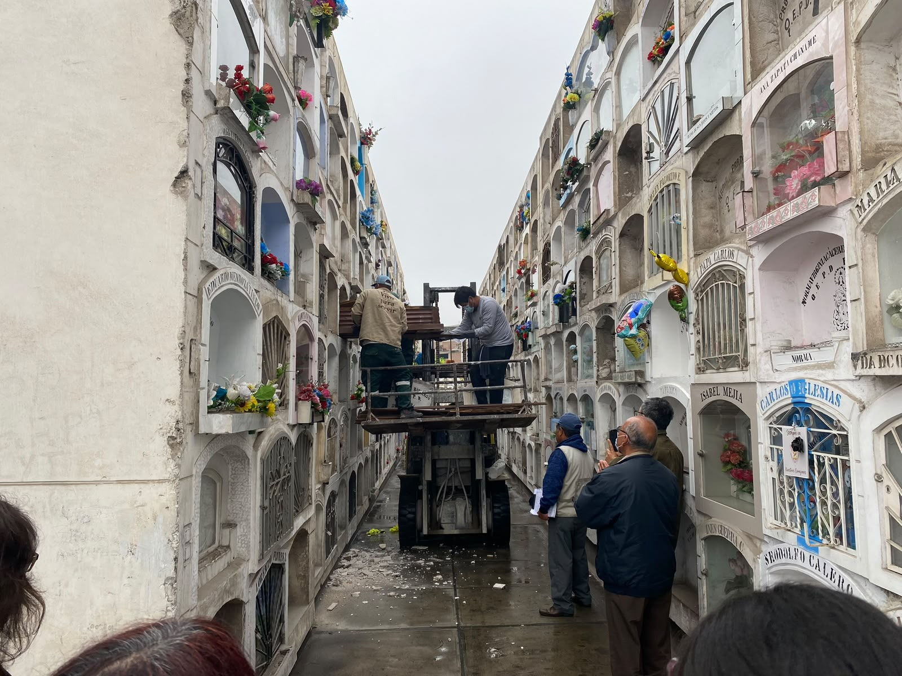
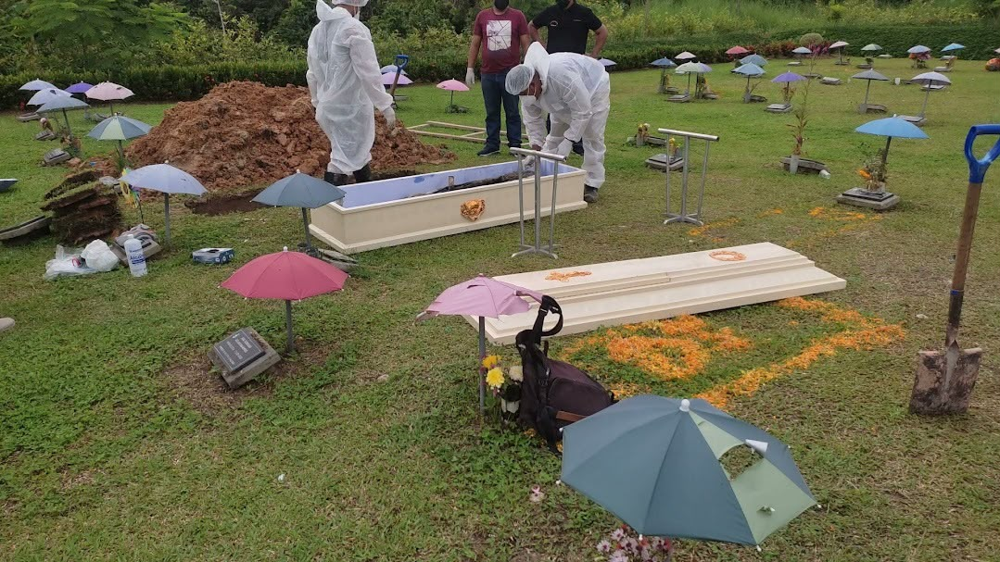
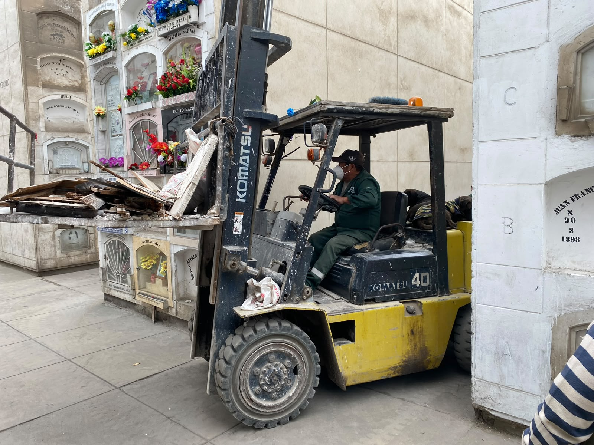
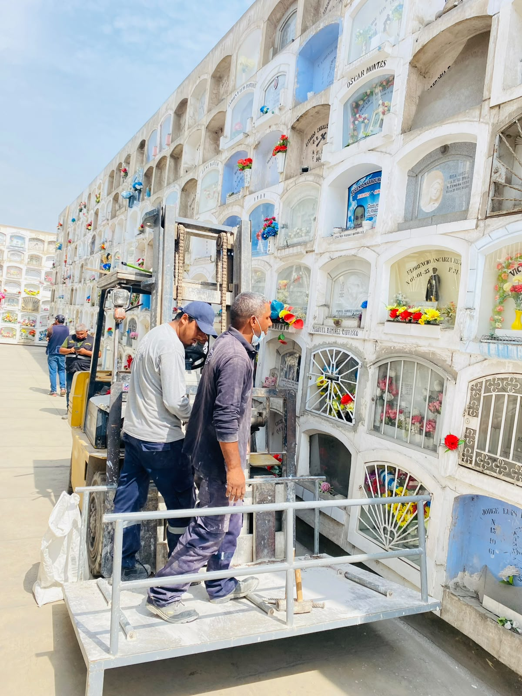

Gestionamos procesos de exhumación con el respeto, orden y respaldo legal correspondiente, tanto en Lima como en provincias del Perú.

Brindamos servicios de exhumación gestionando el proceso de acuerdo con los requerimientos correspondientes de cada camposanto de Lima Metropolitana.
Acompañamos a la familia durante cada etapa, coordinando los procedimientos necesarios para realizar el servicio de manera ordenada, responsable y respetuosa.

Gestionamos exhumaciones en camposantos de provincia, coordinando con las autoridades locales y realizando el posterior traslado hacia Lima u otro destino que la familia requiera.
Nuestro equipo orienta a la familia y coordina cada etapa del procedimiento, buscando que todo se desarrolle de manera adecuada, con respeto y consideración.
Recibimos la solicitud y verificamos los requisitos según el camposanto correspondiente.
Gestionamos la documentación y autorizaciones necesarias ante las entidades correspondientes.
Realizamos la exhumación con el respeto y orden correspondiente, acompañando a la familia.
Coordinamos el destino final de los restos, ya sea traslado, cremación u otro procedimiento.

